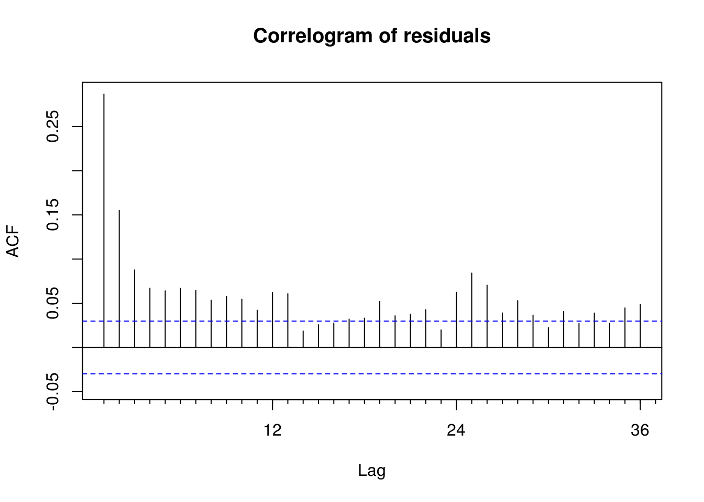
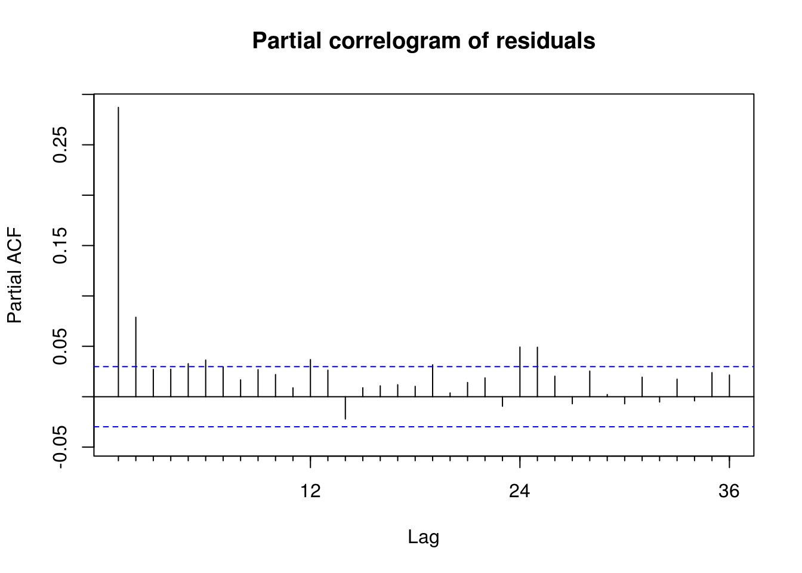
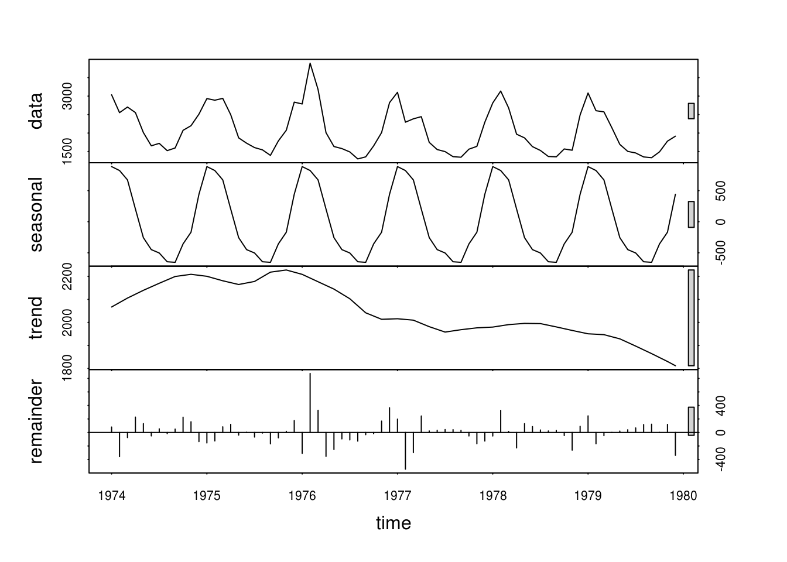

1.6 Smoothing and detrending
We consider detrending of a temperature dataset from the monthly mean temperature from the Hadley center.
We first download the dataset from the web. Typically, this file can be in a repository on your computer, or else you can provide an URL. Common formats include CSV (loaded using read.csv) and txt files (loaded via read.table. Be careful with the type, headers, missing values that are encoded using e.g. 999. Also note that R transforms strings into factors by default.
CET <- url("http://www.metoffice.gov.uk/hadobs/hadcet/cetml1659on.dat")
writeLines(readLines(CET, n = 10))MONTHLY MEAN CENTRAL ENGLAND TEMPERATURE (DEGREES C)
1659-1973 MANLEY (Q.J.R.METEOROL.SOC., 1974)
1974 ON PARKER ET AL. (INT.J.CLIM., 1992)
PARKER AND HORTON (INT.J.CLIM., 2005)
JAN FEB MAR APR MAY JUN JUL AUG SEP OCT NOV DEC YEAR
1659 3.0 4.0 6.0 7.0 11.0 13.0 16.0 16.0 13.0 10.0 5.0 2.0 8.87
1660 0.0 4.0 6.0 9.0 11.0 14.0 15.0 16.0 13.0 10.0 6.0 5.0 9.10
1661 5.0 5.0 6.0 8.0 11.0 14.0 15.0 15.0 13.0 11.0 8.0 6.0 9.78cet <- read.table(CET, sep = "", skip = 6, header = TRUE, fill = TRUE, na.string = c(-99.99,
-99.9))
names(cet) <- c(month.abb, "Annual")
## remove last row of incomplete data
cet <- cet[-nrow(cet), -ncol(cet)]Now let us investigate the dataset in a regression context. Since it is an irregular time series, we use zoo rather than ts.
library(zoo)
library(lubridate)
library(forecast)
library(nlme)# Convert to time series object Create a time object using `seq`, then make
# into `yearmon` The latter has the same internal representation as `ts`
# with frequency
time <- zoo::as.yearmon(seq.Date(from = as.Date("1659/01/01"), length.out = prod(dim(cet)),
by = "month"))
CET_ts <- zoo::zoo(c(t(cet)), time)
graphics.off()
plot(CET_ts, lwd = 0.2, ylab = expression(Temperature(degree * C)), main = "Monthly mean temperature\n in Central England")Now that we have extracted the data, we are now ready to try out with some models to explain seasonal variability as a function of covariates rather than via differencing. If your object is of class ts, the function fourier will do the Fourier basis of order K for you directly.
# Create Fourier basis manually
c1 <- cos(2 * pi * month(CET_ts)/12)
s1 <- sin(2 * pi * month(CET_ts)/12)
c2 <- cos(4 * pi * month(CET_ts)/12)
s2 <- sin(4 * pi * month(CET_ts)/12)
# Can also incorporate using fourier with `ts` objects.
ts1_a <- lm(CET_ts ~ time + fourier(CET_ts, K = 2))
ts1_b <- lm(CET_ts ~ seq.int(1, length(CET_ts)) + c1 + s1 + c2 + s2)
# Same fitted values, different regressors for the trend - see the design
# matrix head(ts1_a$model)
forecast::Acf(resid(ts1_a), main = "Correlogram of residuals")
forecast::Pacf(resid(ts1_b), main = "Partial correlogram of residuals")
One could also replace the Fourier terms with seasonal dummies (possibly removing the intercept if 12 dummies are set). However, the use of Fourier terms, where appropriate, allows for more parsimonious modelling. Always keep pairs of sine and cosine together.
The function stl decomposes a time series into seasonal trend and irregular components. We illustrate the use of the function on the deaths dataset.
seasonal_decomp_death <- stl(deaths, s.window = "periodic")
plot(seasonal_decomp_death)
1.6.1 Exercise 4: Mauna Loa Atmospheric CO2 Concentration
- Load and plot the CO2 dataset from NOAA. Pay special attention to the format, missing values, the handling of string and the description. Use
?read.tablefor help, and look carefully at argumentsfile,sep,na.strings,skipandstringsAsFactors. From now on, we will work with the complete series (termed interpolated in the description). - Try removing the trend using a linear model. Plot the residuals against month of the year.
- Remove the trend and the periodicity with a Fourier basis (with period 12). Be sure to include both
sinandcosterms together. Recall that the standard Wald tests for the coefficients is not valid in the presence of autocorrelation! You could also usepolyorsplines::bsto fit polynomials or splines to your series. - Plot the lagged residuals. Are there evidence of correlation?
- Use the function
filterto smooth the series using a 12 period moving average. - Inspect the spectrum of the raw series and of the smoothed version.
- Inspect the spectrum of the detrended raw series.
- Test for stationarity of the deseasonalized and detrended residuals using the KPSS test viz.
tseries::kpss.test. - Use the
decomposeand thestlfunctions to obtain residuals. - Plot the (partial) correlogram for both decomposition and compare them with the output of the linear model.